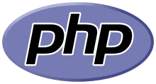
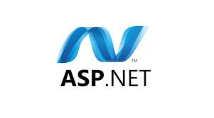
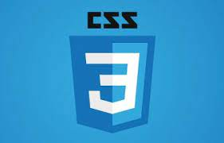
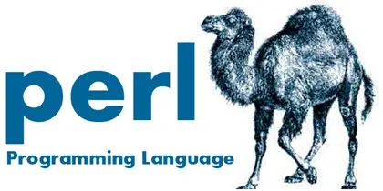
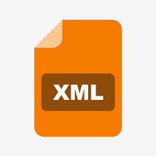

Bahasa Pemrograman
ditulis oleh rivalanugrah. pada 25 Oktober 2023.
Pengertian Bahasa Pemrograman
Dijelaskan dalam Modul Bahasa Pemrograman untuk Pemula oleh Syarifuddin dan kawan-kawan, bahasa pemrograman adalah instruksi dasar dari programmer kepada komputer untuk melakukan suatu hal. Agar komputer dapat memahami seluruh perintah programmer, maka dibuatlah dalam bentuk kata-kata yang terdiri dari banyak baris.Bahasa pemrograman terbagi menjadi tiga jenis, yakni bahasa mesin (machine language), bahasa tingkat rendah/rakitan (low-level/assembly language), dan bahasa tingkat tinggi (high-level language). Lalu, apa yang membedakan dari ketiganya?
Program bahasa mesin terbilang sangat panjang dan sulit dipahami, serta sangat tergantung oleh arsitektur mesin. Namun, bahasa mesin memiliki proses yang sangat cepat dan tidak perlu interpreter atau penerjemah.
Bahasa tingkat rendah sama seperti bahasa mesin, yakni bahasa pemrogramannya tergantung pada arsitektur mesin. Selain itu, programnya juga panjang dan sulit dipahami walaupun prosesnya terbilang cepat. Bedanya, bahasa tingkat rendah perlu penerjemah yang mengetahui seluk beluk komputer atau disebut dengan assembler.
Lalu, bahasa tingkat tinggi menyerupai struktur bahasa manusia sehingga mudah dipahami. Selain itu, bahasa pemrograman ini tidak tergantung pada arsitektur mesin, akan tetapi perlu penerjemah berupa compiler atau interpreter.
Fungsi Bahasa Pemrograman
Dikutip dari buku Membuat Sistem Informasi Gadai Online Menggunakan Codeigniter Serta Kelola Proses Pembuatannya oleh Muhammad Yusril Helmi Setyawan, fungsi bahasa pemrograman adalah memerintahkan sebuah komputer untuk mengolah suatu data sesuai dengan logika yang kita inginkan.Lalu, hasil dari bahasa pemrograman biasanya dibuat dalam bentuk program ataupun aplikasi. Sebagai contoh, lampu lalu lintas di jalan raya sudah terhubung oleh program komputer. Jika tidak, maka akan sulit mengatur lampu lalu lintas selama 24 jam.
Selain itu, fungsi dari bahasa pemrograman digunakan untuk membuat aplikasi permainan, antivirus, website, dan software. Seiring majunya perkembangan teknologi, kini bahasa pemrograman makin sering digunakan manusia untuk memerintahkan komputer.
Contoh Bahasa Pemrograman
Ada banyak sekali bahasa pemrograman yang bisa digunakan saat ini. Berikut penjelasan contoh-contoh bahasa pemrograman.
1. Java

Bahasa pemrograman yang pertama yakni Java. Sedikit informasi, bahasa pemrograman Java sudah digunakan di lebih dari 3 miliar perangkat di seluruh dunia. Pada umumnya Java dipakai untuk aplikasi di smartphone, aplikasi desktop, dan pengembangan situs.
2. Python

Bahasa pemrograman kedua yang sangat populer adalah Python. Bahasa pemrograman yang satu ini sudah berkembang sejak tahun 1980-an dan hingga kini masih banyak dibutuhkan oleh para programer, terutama untuk melakukan coding secara dinamis.
3. JavaScript

Selain itu, ada juga bahasa pemrograman yakni JavaScript yang cukup populer digunakan untuk mengelola website. Saking populernya, hampir 97% situs di seluruh dunia menggunakan bahasa pemrograman JavaScript.
4. HTML

HTML (HyperText Markup Language) adalah sebuah bahasa pemrograman markup yang digunakan untuk membuat halaman web, sehingga dapat menampilkan berbagai informasi yang dibutuhkan di dalam sebuah browser internet.
HTML merupakan standar internet yang didefinisikan dan dikendalikan penggunaannya oleh World Wide Web Consortium (W3C). HTML berisikan kode-kode tag yang menginstruksikan browser untuk menghasilkan tampilan.
5. PHP

PHP atau PHP Hypertext Preprocessor adalah bahasa pemrograman yang juga banyak digunakan saat ini. PHP sering dipakai untuk membuat website yang dinamis, meskipun tidak menutup kemungkinan digunakan juga untuk pemakaian yang lain. PHP biasanya berjalan pada sistem operasi Linux, tapi juga bisa dijalankan dengan hosting di Windows.
6. ASP

Active Server Pages atau ASP adalah salah satu bahasa pemrograman website untuk menciptakan halaman website yang dinamis. ASP merupakan salah satu produk yang disediakan oleh Microsoft, yang mana merupakan server side scripting yang bekerja pada server website.
7. CSS

CSS atau Cascading Style Sheets adalah bahasa stylesheet yang digunakan untuk mengatur tampilan dokumen yang ditulis dalam bahasa markup. Penggunaan CSS yang paling umum adalah untuk memformat halaman web yang ditulis dengan HTML dan XHTML/XML.
8. Perl

Perl adalah bahasa pemrograman mesin dengan sistem operasi Unix, seperti SunOS, Linux, BSD, dan HP-UX. Selain itu, Perl juga tersedia untuk sistem operasi lainnya seperti DOS, Windows, PowerPC, BeOS, VMS, EBCDIC, dan PocketPC.
9. XML

Extensible Markup Language atau disebut juga XML adalah bahasa markup serbaguna yang direkomendasikan oleh World Wide Web Consortium (W3C) untuk mendeskripsikan berbagai macam data. Selain itu, XML menggunakan tags markup seperti halnya di HTML, tetapi penggunaannya tidak terbatas pada tampilan halaman website saja.
10. WML
Wireless Markup Language atau disingkat WML adalah bahasa pemrograman yang digunakan dalam aplikasi berbasis XML (Extensible Markup Language). Sebagai informasi, WML adalah bahasa pemrograman yang digunakan dalam aplikasi wireless. Karena itu, WML bisa dibilang hampir sama dengan HTML tapi hanya berfungsi pada perangkat nirkabel.
Nah, itu dia penjelasan mengenai 10 bahasa pemrograman beserta fungsi, jenis, dan contohnya. Semoga artikel ini dapat membantu kamu yang sedang belajar tentang bahasa pemrograman, detikers.
Sumber: detik.com